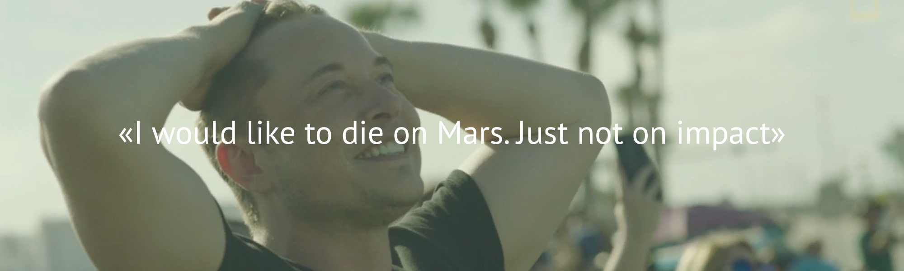

Tesla
Tesla
ранее Tesla Motors — американская компания, производитель электромобилей и решений для хранения электрической энергии.
Компания была основана в июле 2003 года Мартином Эберхардом и Марком Тарпеннингом, но сама компания считает Илона Маска, Джеффри Брайана Штробеля и Иэна Райта почти её сооснователями.
Названа в честь всемирно известного электротехника и физика Николы Теслы.
Суперзарядник
Tesla разворачивает сеть «Суперзарядок» (англ. Supercharger) — станций для зарядки электромобилей, разработанных для того, чтобы на автомобилях Tesla можно было совершать длительные поездки. Станции используют, в основном, энергию от солнечных батарей. Возможность использовать станции есть во всех новых машинах, но некоторые старые 60 кВт⋅ч модели требуют покупки дополнительного модуля за 2500 долларов.
По состоянию на 2015 год в США покрыты основные транспортные коридоры, существует возможность добраться с одного побережья до другого, при этом бесплатно заряжаясь только на станциях быстрой зарядки Tesla. Одновременно сеть «Суперзарядок» активно развивается в Европе и Азии: так, к концу 2015 года ожидалось полное покрытие западной Европы и Японии, а также восточного побережья Китая и Австралии.
В апреле 2016 года в Подмосковье появилась первая в России станция Supercharger.
Стоимость услуг при зарядке автомобилей Tesla:
Зарядка аккумуляторной батареи (до 80 % за 40 минут для 85 кВт⋅ч батареи) — включена в стоимость автомобиля;
Фирменная технология быстрой роботизированной замены батареи на заряженную (занимает полторы минуты) — 60—80 долларов США.
Планы:
В своём интервью один из основателей компании Илон Маск рассказал о планах по расширению производства автомобилей Tesla в Европе. В настоящее время компания проводит крупноузловую сборку Tesla Model S в Нидерландах. Разворачивание серийного производства в Европе планируется начать с запуска «бюджетной» версии Tesla Model 3, которая должна появиться в течение 3—4 лет.
В 2014 году Tesla и штат Невада заключили соглашение о предоставлении налоговых льгот для планируемого к постройке завода аккумуляторов Gigafactory 1 — самого большого в мире. Завод будет с 2020 года производить для электромобилей 500 тыс. батарей. Инвестиции в производство составят около $5 млрд. В январе 2017 года фабрика начала массовое производство.
Компания Tesla Motors сообщила через твиттер о том, что острова Американское Самоа почти на 100 % обеспечены солнечной энергией благодаря эксплуатации свыше 5300 солнечных панелей.
В мае 2017 года Илон Маск представил план развития компании, предусматривающий добавление в линейку электромобилей грузовика и автобуса.
S
Tesla Model S
Концепт автомобиля был представлен 26 марта 2009 года в городке Хоторн, Калифорния. Пятидверный хетчбэк разрабатывается под прежним условным обозначением «Whitestar» фирменным филиалом в Детройте. После окончания проектно-конструкторских работ фабрика должна производить в Калифорнии первоначально 10 000, позже — 25 000 автомобилей модели.
Поставка автомобилей в США началась 22 июня 2012 года. Изначально предлагалось две версии: на 60 и 85 кВт⋅ч, оборудованные одним электродвигателем, расположенным на задней оси. Затем, 9 октября 2014 года, появилась опция с электродвигателями на каждой оси, а уже с 8 апреля 2015 года компания полностью отказалась от однодвигательной комплектации и от 60 кВт⋅ч версии. С этого времени все выпускающиеся машины оборудованы двумя электродвигателями, полным приводом и в базовой версии оснащаются 70 кВт⋅ч батареей. Стартовая цена начинается от 75 750 долларов в США. В зависимости от комплектации, без перезарядки автомобиль сможет проехать 442, 502 и 480 километров.
Согласно US Environmental Protection Agency (EPA) заряда литий-ионного аккумулятора ёмкостью 85 кВт⋅ч хватает на 426 км (265 миль), что позволяет Model S преодолевать наибольшее расстояние из доступных на рынке электромобилей. Изначально в планах Tesla было начать в 2013 году производство автомобилей с аккумуляторами ёмкостью 60 кВт·ч (335 км) и 40 кВт·ч (260 км), однако из-за малого спроса от модели на 40 кВт·ч решено было отказаться от них. Базовая модель S использует жидкостное охлаждение двигателя переменного тока, который имеет мощность 362 лошадиные силы.
Tesla начала поставки с 1000 седанов ограниченного выпуска Signature и Signature Performance, оснащённых аккумуляторами ёмкостью 85 кВт·ч и стоимостью 95 400 и 105 400 долларов соответственно.
Цены на Model S в США в 2017 году начинаются от 70 тысяч долларов и доходят до 140 тысяч долларов . Самый дорогой вариант на настоящий момент — Tesla Model S P100D с запасом хода в 507 километров, способный разгоняться до 100 км/ч за 2,7 секунды.
В июне 2013 года компания показала перезарядку Model S путём автоматической замены батареи. В ходе демонстрации было показано, что процедура занимает примерно 90 секунд, что более чем вдвое быстрее заправки полного бака аналогичного бензинового автомобиля. По заявлению президента компании Илона Маска, «медленная» (20 минут для 50 % заряда аккумулятора) зарядка батареи Model S на заправочных станциях компании останется бесплатной, в то время как быстрая замена обойдётся владельцу машины в сумму порядка 60-80 долларов, что примерно соответствует стоимости полного бака бензина.
Однако, в дальнейшем, от планов по автоматической смене батарей было решено отказаться в пользу развития сети заправок Tesla Superchargers. Только автомобили, проданные до 22 января 2017 года, будут пользоваться пожизненной бесплатной неограниченной быстрой зарядкой на станциях Tesla Superchargers, автомобили, проданные после января 2017 года, получат 400 кВт·ч бесплатной быстрой зарядки в год, при превышении этого количества, владельцу придётся оплатить стоимость потреблённого во время быстрой зарядки электричества.
В 2016 году Tesla Model S получил обновлённый дизайн, частично более схожий с Model 3. В 2017 году также произошло некоторое обновление модельного ряда и теперь в продаже доступны только версии 75, 75D, 100D, P100D (цифры обозначают ёмкость аккумулятора в кВт·ч, D — полный привод, P — производительная версия).
X
Tesla Model X
9 февраля 2012 года компания представила прототип новой модели — кроссовер под названием Tesla Model X. Тогда же Илон Маск заявил, что производство модели планируется начать в 2013 году. Изначально планировалось, что в конце 2014 года будут поставлены небольшие партии, а полноценный выпуск модели начнётся в 2015 году. Однако, в феврале 2014 года было заявлено, что начало поставок ожидается только во втором квартале 2015 года. В ноябре начало поставок было вновь перенесено, на этот раз на третий квартал 2015 года.
По сравнению с Model S внесены следующие изменения: добавлен 3-й ряд сидений, автоматически открывающиеся задние двери вверх для входа пассажиров во 2-й и 3-й ряд, возможность заказать модель с двумя моторами.
В 1-м квартале 2016 года было продано 2400 Tesla Model X.
Автомобиль доступен в трех спецификациях:
Модель 75D, где D означает Dual Motor, т.е. в базовой комплектации автомобиль оснащен двумя электродвигателями. Цифра 75 относится к мощности батареи и составляет 75 кВт*ч.
Модель 90D комплектуется двумя двигателями и разгоняется до 100 км/ч за 4,8 секунды, что на 0,1 секунды быстрее 440-сильного внедорожника Porsche Cayenne GTS.
Модель P90D укомплектована двумя электродвигателями общей мощностью 772 лошадиных сил: 259 л.с. на передней оси и 503 л.с. на задней. С места до 100 км/ч разгоняется за 3,8 секунды, а с дополнительным пакетом Ludicrous Speed Upgrade – за 3,2 секунды. Эта модель быстрее, чем Lamborghini Gallardo LP570-4 или McLaren MP4-12C.
Обе модели оснащены батарей ёмкостью 90 киловатт-часов, запас хода 90D составляет 411 километров, у P90D – 400 километров. Базовая версия 70D получила батарею в 70 киловатт-часов, а её запас хода снижен до 354 км. Максимальная скорость ограничена «электроникой» на отметке в 250 км/ч. Коэффициент аэродинамического сопротивления Model X за счёт активного заднего спойлера составляет 0,24 – рекорд в своём классе.
Ключевая особенность модели — автоматические двери в форме крыла чайки, которые Tesla называет «крыльями сокола», поскольку дверь имеет не жесткую Г-образную форму, а сгиб с изменяемым углом. Они облегчают доступ в автомобиль для пассажиров второго и третьего рядов, а также требуют меньше места на парковке — 30 см до ближайшей стены или машины.
Кроссовер может быть пяти-, шести- или семиместным — по желанию покупателя. Сиденья третьего ряда складываются в ровный пол и увеличивают место для багажа. Кроме того, дополнительный багажник находится спереди под капотом.
3
Tesla Model 3
изначально носила названия Model E и «BlueStar», текущее название было анонсировано 15 июля 2014 года. Ожидалось, что модель будет представлена в марте 2016 года.
Мартин Эбергартд сообщил 30 июля 2007 года, что транспортное средство будет в продаже к 2012 году. Предусмотренная цена модели в США была объявлена в пределах 30 000 долларов.
Модель была представлена публике 1 апреля 2016 г. За первую неделю машину зарезервировали 325 тысяч человек, внеся депозит в одну тысячу долларов.
Но запуск был перенесён на 2017 год. Приблизительная цена поднялась до 35 000 долларов, дальность поездки будет приблизительно равна 320 км. Автомобиль будет на 20 % меньше Model S.
Изначально электромобиль должен был называться Tesla Model Е, но компания Ford подала на Tesla Motors в суд, который и выиграла, получив право на название «Model E».
В базовой комплектации автомобиль имеет электромотор мощностью 258 л. с., обладает запасом хода в 350 км и разгоняется до 100 км/ч за 5.8 секунд. Автомобиль в комплектации «long range» имеет запас хода 500 км и максимальную скорость 225 км/час. Будет доступна полноприводная версия в дополнение к стандартной заднеприводной. Как и старшие модели, Tesla Model 3 комплектуется системой автопилота, а также имеет доступ к фирменной сети зарядок Supercharger. У машины два багажника, панорамное остекление и 15-дюймовый сенсорный экран, полностью заменивший приборную панель. Компания заявляет, что коэффициент аэродинамического сопротивления составил 0,23.
Tesla Model 3 стала первой моделью компании, ориентированной на массовый рынок. Отпускная цена установлена на уровне в 35 тысяч долларов, однако часть первых покупателей сможет получить федеральный налоговый вычет в размере 7500 долларов. Государственная поддержка распространяется на первые 200 тысяч электроавтомобилей любого производителя, проданных в США. Tesla Motors к концу марта 2016 года реализовала 125 тысяч машин, из них лишь часть пришлась на внутренний рынок. По некоторым оценкам, вычет перестанет действовать уже в начале 2018 года.
На ежегодном собрании акционеров, прошедшем 31 мая 2016 года, Илон Маск объявил, что владельцы Model 3 будут платить за пользование фирменной сетью зарядных станций Supercharger или должны приобрести соответствующую опцию. Причиной этого решения компания назвала желание максимально уменьшить начальную стоимость автомобиля. 2 июня Маск сообщил, «разработка Model 3 практически завершена» и что компания планирует окончить разработку «через шесть недель», оставив любые новые идеи для следующих версий. Также было объявлено, до конца 2016 года состоится мероприятие, посвящённое Model 3. Издание The Verge предполагает, что речь шла о презентации готовой к производству версии электромобиля.
Основным конкурентом нового автомобиля может стать сопоставимый по цене и запасу хода электрический Chevrolet Bolt представленный компанией General Motors.
Первые серийные Tesla Model 3 были представлены журналистам и сотрудникам компании 28 июля 2017 года на церемонии вручения первых 30 машин. Приоритет в очереди получили сотрудники компании, первые поставки не связанным с компанией заказчикам планируются на ноябрь-декабрь 2017 года. Первое время будет производится только одна версия Tesla Model 3 - с батареей увеличенной ёмкости(Long Range) и "премиальным пакетом" общей стоимостью 49 000$. Model 3 с батареей увеличенной ёмкости разгоняется от 0-100 за 5,1 секунды, имеет запас хода в 310миль(500км). В состав "премиального пакета" входит стеклянная крыша, улучшенная отделка и кресла, автоматизированные боковые зеркала и премиальная аудиосистема. В качестве опций предлагается доплатить: 5 000$ за улучшенный автопилот, 3000$ за (будущую) возможность полного самоуправления(self driving capabilities), 1500$ за 19 дюймовые колёса и 1000$ за любую расцветку кроме чёрной.
Поставки Tesla Model 3 в стандартной комплектации за 35 000$ планируется начать в конце 2017, весной 2018 года рассчитывают начать поставки версии с 2 моторами(D), а в дальнейшем и с улучшенной производительностью(PD). Первые поставки Tesla Model 3 за пределы США планируют начать в конце 2018, а выпуск версии с правым рулём - только в 2019.
В 3 квартале 2017 года было произведено только 260 Tesla Model 3.
Roadster
Tesla Roadster
— спортивный электромобиль, первый автомобиль калифорнийской фирмы Tesla. Выпускался в 2008—2012 годах, было собрано около 2600 автомобилей. Цена автомобиля — около 110 тысяч долларов.
Официальная презентация состоялась 19 июля 2006 года в Санта-Моника, Калифорния.
Tesla Roadster способен разгоняться до 100 км/ч менее чем за 4 секунды. Максимальная скорость принудительно ограничена 201,1 км/ч. Заряда литий-ионных (Li-ion) батарей хватает на 300—400 км. Полная зарядка аккумуляторов занимает 3,5 часа. Стоимость базовой модели — 109 000 долларов.
Новый Tesla Roadster — четырёхместный спортивный электромобиль компании Tesla, прототип которого представлен в ноябре 2017 года и заявлен как самый быстроразгоняющийся серийный автомобиль из когда-либо созданных.
Серийный выпуск модели намечен на 2020 год и ожидается не ранее модели Tesla Model Y.
Илон Маск заявил, что новый родстер станет самым быстрым автомобилем в линейке компании, с новым режимом ускорения под названием Maximum Plaid, превосходящим ранее известные режимы Insane и Ludicrous в моделях S и Х .
Новый родстер был разработан Францем фон Хольцхаузеном
 Elon
Elon SpaceX
SpaceX SolarCity
SolarCity